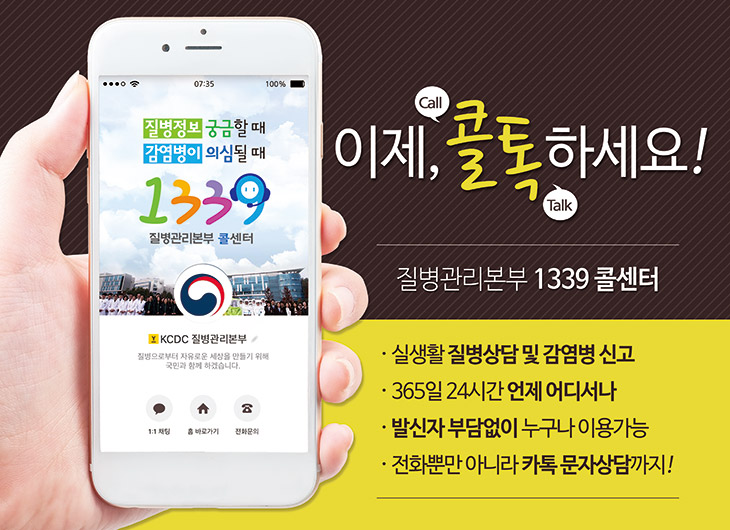

1339콜센터
1339콜센터
작성일 2019-05-15 ㅣ 최종수정일 2020-03-31 ㅣ 담당부서 위기소통담당관
▣ 소개
- 질병정보 궁금할 때, 감염병이 의심될 떄 질병관리본부 콜센터 ☎1339로 문의하세요!
- 언제 어디서 1339로 전화하시면, 질병관리 정보와 상담서비스를 신속하고 정확하게 제공해드립니다.

▣ 이용안내
대표 번호: 국번없이 1339(무료)
운영시간: 365일 24시간
외국인 상담: 상담을 원하는 국내 체류 외국인은 한국관광공사 관광안내센터(☎1330)
☎ 1330 관광통역안내전화 운영시간 및 상담언어(8개국어)
| 이용시간 |
언어 |
| 24시간 |
한국어, 영어, 중국어, 일본어 |
| 08:00~19:00 |
베트남어, 태국어, 말레이 또는 인도네시아어, 러시아어 |
*주요상당담기능: 숙박예약, 교통, 문화, 입장권, 외국어통역 등